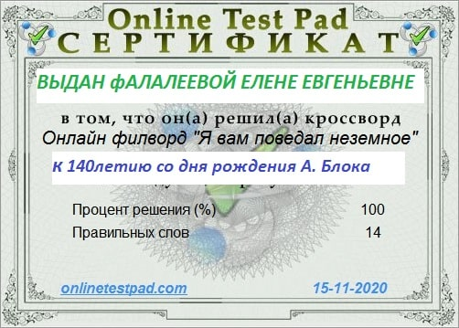

Новости
суббота, 5 декабря 2020 год
вторник, 1 декабря 2020 год

суббота, 28 ноября 2020 год
Видео с чтением стихов, посвящённые Дню матери в России.
суббота, 28 ноября 2020 год
Слайд-шоу «Новые книги в Краснопольской библиотеке в ноябре 2020 года».
30 ноября исполняется 185 лет со дня рождения Марка Твена.
пятница, 27 ноября 2020 год
четверг, 26 ноября 2020 год
Алина Евгеньевна Хлебникова заняла 1-е место в районном конкурсе «Лучший молодой читатель 2020».
четверг, 26 ноября 2020 год
понедельник, 16 ноября 2020 год
воскресенье, 15 ноября 2020 год
пятница, 13 ноября 2020 год
15 и 16 ноября на сайте экодиктант.рус пройдёт Всероссийский экологический диктант, в котором вы можете принять участие онлайн. Проведение диктанта должно помочь развитию экологической культуры среди населения, повышению экологической грамотности, что будет способствовать предотвращению экологических правонарушений.
вторник, 10 ноября 2020 год